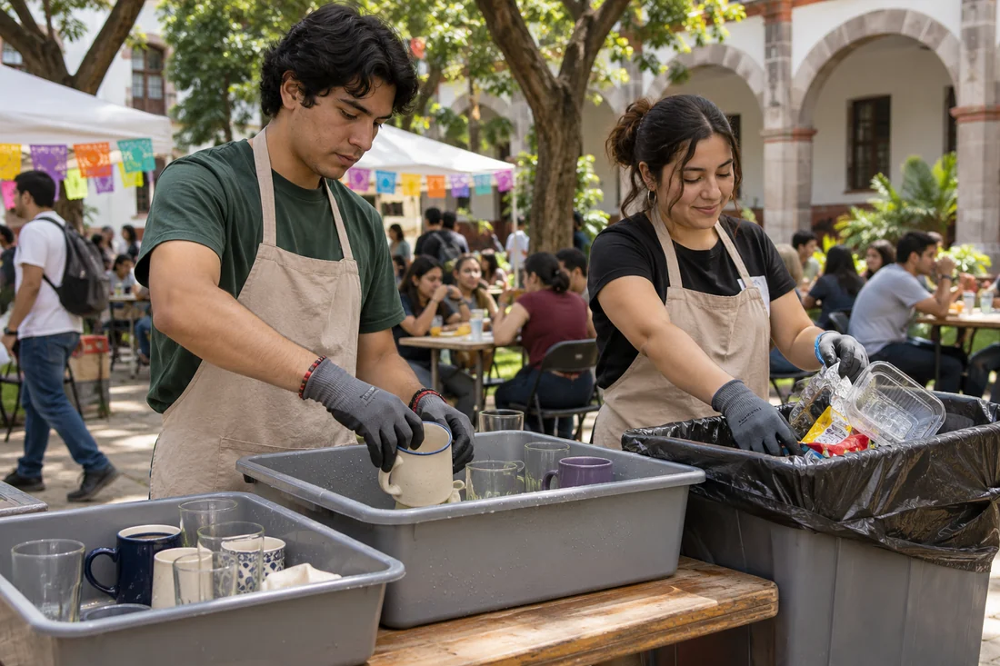
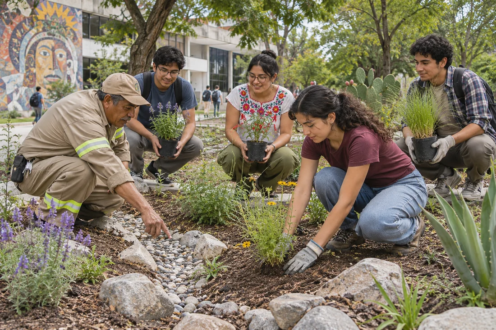

Ideas centrales
La ética planetaria amplía el juicio moral a las relaciones que sostienen la vida en la Tierra. Cuando compramos, construimos o desechamos algo, podemos preguntar quién se beneficia, quién asume los costos y qué consecuencias seguirán presentes en el futuro. La Carta de la Tierra vincula el cuidado de la naturaleza con los derechos humanos, la justicia económica y la paz. Así, una alternativa ambiental también debe evaluarse por su efecto en las personas que dependen de ella (Comisión de la Carta de la Tierra, 2000).
El material del curso recupera la propuesta de Leonardo Boff y coloca el cuidado en el centro de la ética planetaria. Cuidar implica reconocer que los daños ambientales y sociales están relacionados, prevenirlos cuando sea posible y asumir la reparación cuando una actividad los produce (Universidad Tecmilenio, 2023c).
Esta responsabilidad alcanza a quienes todavía no pueden participar en nuestras decisiones. La UNESCO (1997) plantea que las generaciones actuales deben proteger las necesidades de las futuras y evitar que la actividad humana dañe irreversiblemente el planeta. En una decisión práctica, la justicia entre generaciones significa conservar opciones para el futuro, como el acceso a agua limpia, en vez de trasladarle los costos de una ventaja inmediata.
En el caso del plástico, el Programa de las Naciones Unidas para el Medio Ambiente (2023) propone empezar por reducir los usos innecesarios y combinar la reutilización, el reciclaje y la adopción de alternativas. Una forma de aplicar ese enfoque es revisar el ciclo completo de una compra, desde la producción y el uso hasta su destino como residuo. También conviene distinguir qué puede cambiar cada actor. El alumnado puede llevar su botella, mientras que la escuela puede ofrecer una opción de recarga a quienes la necesiten.
Ejemplo de aplicación
En una feria escolar, el comité debe elegir entre vender botellas desechables o habilitar puntos de recarga con agua potable y ofrecer vasos reutilizables en préstamo. Elige la segunda opción y consulta al personal de limpieza para acordar un sistema de devolución y lavado. Así cuida el acceso de quienes llegan sin recipiente y distribuye el trabajo de manera explícita. Al terminar, el comité registra cuántos vasos se recuperaron, cuántas botellas se vendieron y qué dificultades reportó el personal para mejorar la siguiente feria.
Por qué elegí este subtema
Elegí ética planetaria porque permite comprender cómo una decisión local puede generar costos lejos de donde se toma y después de que se obtienen sus beneficios. En el módulo aporta un criterio para juzgar decisiones de consumo y organización colectiva. Cualquier lector puede aplicarlo al comparar qué reduce un impacto, a quién beneficia y quién tendrá que sostener la solución.
Galería del subtema


